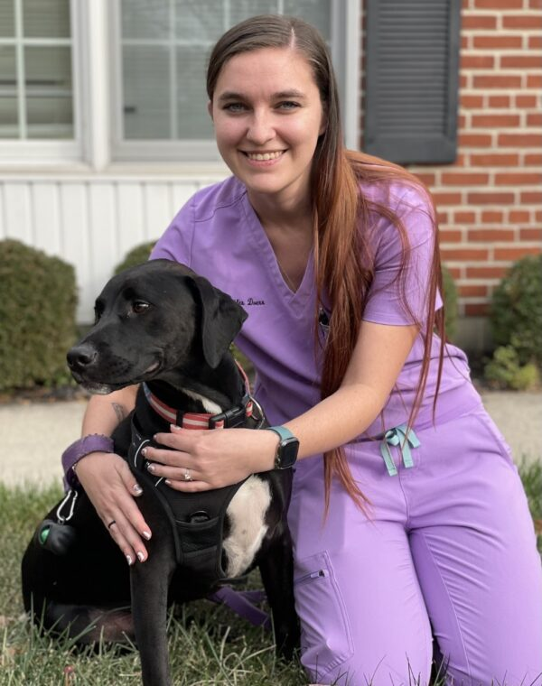

About Us

Since 1984, Beechmont Pet Hospital has been providing excellent veterinary care for families in Anderson Township. Our commitment to affordable care for the pets you love, as well as upgrades to our facility made in 2007, will ensure that your pets receive the highest quality of care.
Our Furry Staff

Biscuit helps with the onboarding of new animal staff members, and has been an essential member of our team since 2018.
Bob has provided emotional support and comfort for staff and clients since joining our team in 2015.
Our Veterinary Staff

Dr. Jennifer Wisman, DVM, is a graduate of the Ross University School of Veterinary Medicine. Outside of the clinic, she enjoys reading mystery/thriller books in her spare time.

Dr. Joanna Haritg, DVM, is a graduate of Ohio State University and Thomas More College. She specializes in internal medicine and feline medicine.